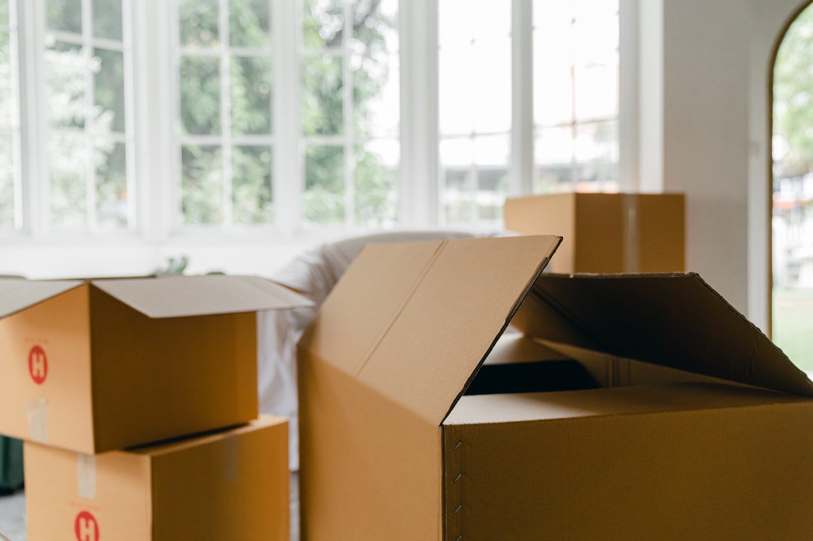
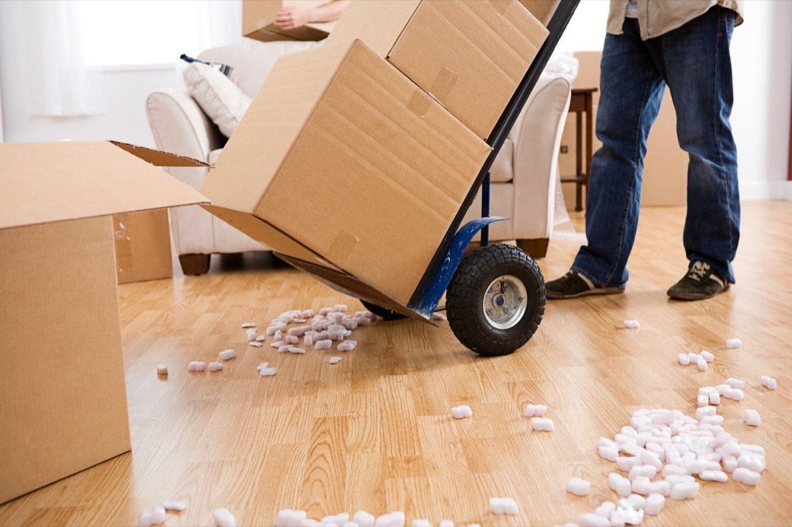

★★★★★
"Absolutely brilliant from start to finish. Really professional, polite and efficient. Would definitely use again. Thank you so much for making my move so easy."
North Staffordshire Removals & Storage Ltd is Staffordshire's leading home and business removals and storage company. From our Stoke-on-Trent base our professionally trained team packs, loads and delivers thousands of homes and offices every year — with a clear fixed price and end-to-end support from first call to final unload.
From a one-bed flat in Hanley to a whole-office relocation in Stafford — pick the service that fits your move, or request a tailored quote.
Full home moves across Staffordshire. Two- and four-man crews, modern Luton and 7.5-tonne trucks, fixed-price quote.
Learn more
Out-of-hours office relocations — IT decommission, crate hire and planned floor-by-floor lifts across the Potteries.
Learn more
Secure, alarmed container storage in Stoke-on-Trent — from a single pallet for a few weeks to long-term household storage.
Learn moreProfessional packers can wrap and box an average house in a single day, or just handle the fragile kitchen and china.
Learn moreMoving home or office is one of the most stressful things you can do. For fifteen years our small Stoke-on-Trent team has spent every day making it less so — by keeping prices fixed, treating belongings like our own, and being honest about what a move really involves.
Every quote is fixed for 60 days after a free home or video survey. No hourly billing, no surprise fuel surcharges, no "we ran over" on the day.
Comprehensive Goods in Transit and £10 million Public Liability cover. Claims handled directly by our team — never a third-party broker.
Completion delays happen. Solicitors, chains, key waits — we don't charge a penny for any of them. We simply update the diary and turn up when you're ready.
Clean Luton and 7.5-tonne lorries maintained in our own Stoke-on-Trent workshop. No hire vans, no last-minute substitutes.
Every crew trains in-house to the same wrap-and-protect standard, in branded uniform. Real movers, not casual day labour.
One number, one team, one promise — from the first survey through to the last carton unpacked. If anything isn't right, you call us and we fix it.
We started in 2010 with one Luton van and a simple promise — to treat every customer's belongings as if they were our own. Today we run a fleet of modern Luton and 7.5-tonne trucks out of our Stoke-on-Trent depot, with the same family hands at the helm.
Everyone you'll speak to — the office team, the surveyor, the crew on the day — works directly for us. We don't sub-contract, we don't pad the bill, and we don't disappear after the deposit clears.
Nearly seven in ten of our jobs each year come from repeat customers or personal recommendations across Stoke, Newcastle, Leek and beyond.
Whether your chain breaks down, your office is between premises or you just need a few weeks of breathing space, our alarmed depot is on hand. All units are weather-sealed, individually palletised and accessed only by you.
From our Stoke-on-Trent base our crews are on the doorstep of every postcode in the ST area, plus Newcastle-under-Lyme, the Moorlands and the wider Staffordshire and Peak District borders.
Hanley · Burslem · Tunstall · Longton · Fenton · Stoke
View Stoke-on-Trent detailsNewcastle · Kidsgrove · Audley · Madeley · Keele
Explore Newcastle-under-LymeStafford · Gnosall · Penkridge · Brewood · Haughton
See Stafford infoStone · Walton · Aston · Yarnfield · Barlaston
Local pricing for StoneLeek · Cheddleton · Werrington · Endon · Wetley Rocks
About Leek & the MoorlandsEccleshall & the villages of west Staffordshire
Coverage in EccleshallBurton · Stretton · Branston · Barton-under-Needwood
Plan your Burton moveBuxton & the Peak District towns over the border
Quote for Buxton"Absolutely brilliant from start to finish. Really professional, polite and efficient. Would definitely use again. Thank you so much for making my move so easy."
"Our completion got pushed back twice and they didn't charge us a thing. The crew were brilliant on the day — couldn't have asked for a smoother move from Newcastle out to Leek."
"Polite, careful and fast. They handled my grandmother's piano like it was made of glass. Highly recommend to anyone moving anywhere in Staffordshire."
The UK removals industry is unregulated — anyone can call themselves a remover and start trading tomorrow. The questions worth asking any prospective remover are whether they're fully covered for Goods in Transit and Public Liability, whether they sub-contract, and how long they've been trading under their current name. If you don't like the answers, walk away and pay a little more for a remover who can answer all three convincingly.
We've been family-run from our Stoke-on-Trent depot since 2010. Every crew member is a direct employee, every quote is fixed for 60 days, every move is fully covered for Goods in Transit and £10 million Public Liability, and every customer rings the same office for the same team if anything needs follow-up. We don't broker work to other companies, we don't run franchise vans, and we don't pad bills with surprise charges on the day.
Most of our annual bookings come from repeat customers and personal recommendations across Stoke-on-Trent, Newcastle-under-Lyme, Leek, Stafford and the wider Staffordshire patch. That word-of-mouth growth is the single best proof a removals company can offer of consistent service. The 4.9-out-of-5 rating from 187 verified reviews is the public record; the private record is the customers who book us again two, five and ten years later when they move next.
We recommend booking 4–6 weeks ahead during the busy spring and summer season across Staffordshire. For off-peak moves we can often fit you in with 1–2 weeks' notice. A small deposit locks in your move date.
Stoke-on-Trent, Newcastle-under-Lyme, Stafford, Stone, Leek, Eccleshall, Burton-on-Trent, Buxton and the wider Staffordshire region — see the full areas covered page.
Yes — full Goods in Transit insurance and £10 million Public Liability cover. Claims are handled directly by our team, not a broker.
We sell sturdy double-walled cartons, wardrobe boxes, bubble wrap and tape, and we offer a full packing service or fragile-only crew. See our packing services.
We never charge for postponements or key waits — we simply update the diary and re-book at no extra cost. One of the things our Staffordshire customers tell us they appreciate most.
Most local 2–3 bedroom moves fall between £450 and £950 depending on volume, access and packing. We quote on a fixed-price basis after a free survey. Get your free quote →
Most surveys take under 30 minutes — by video or in person, whichever you prefer. End-to-end support from first call to final unload.